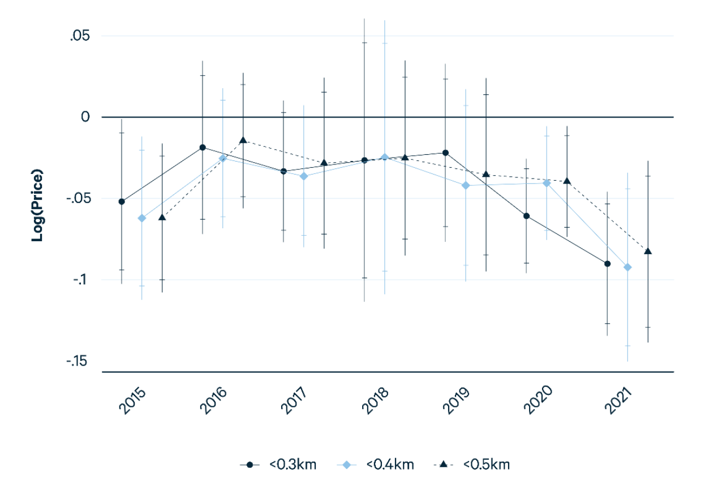

Salience, Wildfire and Homeprices in California
How Home-ownership choices Respond to Risk in the Wildland Urban Interface
Lala Ma
University of Kentucky
Margaret Walls
Resources for the Future
Matthew Wibbenmeyer
Resources for the Future
Emily Joiner
Resources for the Future
Connor Lennon
Bayer (Colaberry)
Agenda
Two deeply-intertwined papers today
Risk Disclosure and Home Prices: Evidence from California Wildfire Hazard Zones
Untitled Work on Experience and Disclosure: Sorting over Wildfire Risk In the Wildland Urban Interface (WUI)
These papers; together, are trying to tease out how homeowners respond to wildfire risk and experience.
Human Exposure to Wildfire
Two key questions where we are trying to add evidence -
Do homeowners price-in wildfire risk when purchasing a home, and what is the risk discount?
How does information on wildfire risk and experience drive changes in moving decisions?
Taken together: trying to understand how information and policy are shaping the demographics of the future WUI
Homeowner Preferences Drive Damages
Homeowner location choices change development patterns which are a significant component of expected future wildfire losses and management costs

Q: What effect does information have on prices
Q: what is the distributional incidence of the effect, and who responds to this information and how?
Q: What does this imply for forest/housing policy going forward?
Risk Disclosure and Home Prices
Wildfire and Risk Awareness
Escalating damages from wildfires in recent years.
Are potential home-buyers aware of local wildfire risk?
Does information on these risks capitalize into property prices?

California FHSZ disclosure requirements → changes in home prices
Summary
Goal: Use Hedonic Boundary Discontinuity Design to estimate the ATE of risk information on property prices
Uses ZTRAX transaction data in California geographically linked to FHSZ1 boundary lines
Boundary design driven by California’s disclosure laws
Homes facing disclosure requirements cost 4.3 percent less than nearby homes that do not
These rise over time
Related Literature
- Hedonics of Disaster Risk (Rosen 1974)
- Negative willingness-to-pay for wildfire risk, when risk is salient
(Donovan, Champ, & Butry 2008, McCoy and Walsh 2018, Garnache 2023, Ma et al. 2023) - Observed in parallel to flood risk
(Hallstrom and Smith, 2005; Kousky, 2010; Bin and Landry, 2013; Gallagher, 2014)
- Negative willingness-to-pay for wildfire risk, when risk is salient
- Boundary Discontinuity Design (Black 1999)
- Risk is spatially correlated: use disclosure requirement discontinuity, smooth amentity change to identify changes from disclosure
(Turner et al. 2014, Bakkensen and Ma 2020)
- Risk is spatially correlated: use disclosure requirement discontinuity, smooth amentity change to identify changes from disclosure
Data
- ZTRAX linked transaction and assessors data from 2015-2022
- Used this period as 14 of the most destructive wildfires in state history occurred during between the start and end date.
- Transactions show information on prices and signatory dates
- Assessment contain property-specific hedonic characteristics (eg. bedrooms, lot square footage etc.)
ZTRAX linked transaction and assessors data from 2015-2022
- These transactions are then geo-located to:
- FHSZ
- Responsibility Area (FRA/SRA/LRA)
- School District (to control for test scores)
- distance to nearest Protected Area (PAD)1
Data - Wildfire Hazard Disclosure
Disclosure requirements: FHSZ and Responsibility Area
- FHSZ
- Medium
- High
- Very High
- Responsibility Area
- Local (LRA)
- State (SRA)
- Federal (FRA)

California Wildfire Hazard Disclosure Laws
| None | Medium | High | V high | |
|---|---|---|---|---|
| Local Responsibility Area (LRA) | No | No | No | Yes |
| State Responsibility Area (SRA) | No | Yes | Yes | Yes |
| Federal Responsibility Area (FRA) | No | No | No | No |
| None | Medium | High | V high | |
|---|---|---|---|---|
| Local Responsibility Area (LRA) | No | No | No | Yes |
| State Responsibility Area (SRA) | No | Yes | Yes | Yes |
| Federal Responsibility Area (FRA) | No | No | No | No |
| None | Medium | High | V high | |
|---|---|---|---|---|
| Local Responsibility Area (LRA) | No | No | No | Yes |
| State Responsibility Area (SRA) | No | Yes | Yes | Yes |
| Federal Responsibility Area (FRA) | No | No | No | No |
Data: Summary Statistics
Wildfire Hazard
| Full Sample | Regulated | Unregulated | |
|---|---|---|---|
| ln(1+WHP) | 1.69 | 4.13 | 1.18 |
| (2.74) | (3.37) | (2.28) | |
| Previous Fire | 0.02 | 0.09 | 0.01 |
| (0.14) | (0.29) | (0.08) | |
| N | 1,566,426 | 271,413 | 1,295,013 |
Data: Summary Statistics
Assessor Data
| Full Sample | Regulated | Unregulated | |
|---|---|---|---|
| Price | 625,444 | 746,907 | 599,987 |
| 846,988 | 1,006,942 | 807,154 | |
| Bathrooms | 2.327 | 2.5 | 2.29 |
| (0.85) | (1.03) | (0.81) | |
| Bedrooms | 3.362 | 3.28 | 3.38 |
| (0.895) | (.99) | (0.81) | |
| Year Built | 1980.67 | 1984.9 | 1979 |
| (24.91) | (22.27) | (25.34) | |
| N | 1,566,426 | 271,413 | 1,295,013 |
Data: Summary Statistics
Property Size
| Full Sample | Regulated | Unregulated | |
|---|---|---|---|
| Building Area | 1973.18 | 2245.02 | 1916.21 |
| (7739.74) | (1213.98) | (8492.98) | |
| ln(lot size) (log acres) | -1.543 | -0.82 | -1.69 |
| (.96) | (1.4) | (0.76) | |
| N | 1,566,426 | 271,413 | 1,295,013 |
Data: Summary Statistics
| Full Sample | Regulated | Unregulated | |
|---|---|---|---|
| Pct Meeting Standard, LA | 52.15 | 54.4 | 51.67 |
| (13.75) | (13.98) | (13.66) | |
| Pct Meeting Standard, Mth | 39.22 | 41.34 | 38.77 |
| (15.44) | (16.3) | (15.21) | |
| Pct White | 66.0 | 80.0 | 64.0 |
| (19.0) | (13.0) | (18.0) | |
| PAD Distance (km) | 17.13 | 11.68 | 18.27 |
| (14.40) | (9.22) | (15.01) | |
| Incorporated | .77 | .37 | .86 |
| (.42) | (.48) | (.35) |
Model: Naive Hedonic
\[ \begin{equation} ln(P_{i,t}) = \alpha + \beta X_{i,t} + \gamma Z_{i,t} + \delta W_{i,t} + \nu_{t} + \epsilon_{i,t} \end{equation} \]
Indices
- \(i\): Property
- \(t\): Time
Variables
- \(ln(P_{i,t})\): Log price
- \(X_{i,t}\): Property Characteristics
- \(Z_{i,t}\): Neighborhood/Spatial Characteristics
- \(W_{i,t}\): Wildfire hazard
Model: Naive Hedonic
\[ \begin{equation} ln(P_{i,t}) = \alpha + \beta X_{i,t} + \gamma Z_{i,t} + \delta W_{i,t} + \nu_{t} + \epsilon_{i,t} \end{equation} \] Two primary identification threats
1 Information
\(W_{i,t}\) will capture both wildfire hazard and awareness of this hazard on the individual level.
Leads to attenuated \(\delta\)
2 Omitted Variables Bias
to avoid, we require
Perfectly measured \(Z_{i,t}\)
Exact functional mapping from \(f(Z_{i,t}) \to ln(P_{i,t})\)
\(P(W_{i,t}, \epsilon_{i,t}|Z_{i,t}) = 0\ \forall\ \{W_{i,t}, P_{i,t},Z_{i,t}\} \in \mathcal{D}\)
Model: Boundary Discontinuity
\[ \begin{gather} ln(P_{i,t}) = \alpha + \beta X_{i,t} + \gamma Z_{i,t} + \delta Regulated_{i,t} + \nu_{c,t} + \nu_{g} + \eta_{i} + \epsilon_{i,t} \\ \forall\ i \in \mathcal{D}\ s.t. \\ FHSZ_{i} = High\\ min(dist(i,bnd)) < Bkm \ \forall\ bnd \in \ BoundaryLine \end{gather} \]
New Indices
- \(c\): County
- \(g\): Grid Cell1
New Variables
- \(v_g\): Grid Cell Fixed Effects
- \(v_{c,t}\): County Time Trend
- \(Regulated_{i,t}\): Property is mandated discloser
Model: Boundary Discontinuity
\[ \begin{gather} ln(P_{i,t}) = \alpha + \beta X_{i,t} + \gamma Z_{i,t} + \delta Regulated_{i,t} + \nu_{c,t} + \nu_{g} + \eta_{i} + \epsilon_{i,t} \\ \forall\ i \in \mathcal{D}\ s.t. \\ FHSZ_{i} = High\\ min(dist(i,bnd)) < Bkm \ \forall\ bnd \in \ BoundaryLine \end{gather} \]
- Fire risk: Rather than estimate wildfire risk’s hedonic value directly, we condition the data on a categorical risk1
- focus on discontinuity in information to estimate LATE of information shock, \(\delta\), within category of risk
- \(Z_{i,t}\): PAD distance, school district - these either may follow SRA/LRA boundaries or vary monotonically across those boundaries
- \(X_{i,t}\): Control for property characteristics
Results: Southern California
| 10km | 8km | 6km | 4km | 1km | |
|---|---|---|---|---|---|
| Regulated | -.0253* | -.0267* | -.0248 | -.0343* | -.0402** |
| (.0121) | (.0121) | (.0131) | (.0151) | (.0154) | |
| Observations | 139,195 | 138,052 | 125,789 | 98,035 | 72,967 |
| R2 | 0.799 | 0.800 | 0.807 | 0.815 | 0.821 |
Results: Northern California
| 10km | 5km | 1km | |
|---|---|---|---|
| Regulated | -.00729 | -.00308 | -.0229 |
| (.0187) | (.0194) | (.0221) | |
| Observations | 49,668 | 44,116 | 19,892 |
Northern California: Not significant, and smaller estimates.
- Fewer transactions
- More variability across boundaries
Results: Full Table
Results: Over Time
… we’re going to come back to this

Discussion
Interlude
Revisiting Motivating Questions
Homeowner location choices change development patterns which are a significant component of expected future wildfire losses and management costs
Q: What effect does information have on prices?
Answer - negative shock to sale price, at least in Southern California
Q: what is the distributional incidence of the effect, and who responds to this information and how?
Q: What does this imply for forest/housing policy going forward?
Intention: Use a sorting model approach to help understand how this information effect manipulates location choice.
Sorting Over Wildfire Hazard
Observational Data
Higher-risk homes in western states usually have higher property values, and thus higher prices.

Summary: Approach
Goal: Estimate responsiveness of utility and choices to wildfire hazard, across income, individuals’ fire experience and location heterogeneity
Uses ZTRAX transaction and assessment data, linked to home mortgage records from the HMDA dataset across all of California.
Using name-matching across mortgage documents, build a historical record for each buyer of the home they moved from (origin home) and to (focal home)
Design: BLP sorting model with:
- choices distinguished by wildfire disclosure requirements
- individual heterogeneity with past wildfire experience.
Summary: Results
Goal: Estimate responsiveness of utility and choices to wildfire hazard, across income, individuals’ fire experience and location heterogeneity
- WTP for wildfire risk:
- Buyers with higher income receive more disutility from fire risk when risk is disclosed than lower-income buyers
- Information Shock:
- Buyers with previous experience with wildfire experience receive more disutility from fire risk when risk is disclosed than less-experienced buyers
Relevant Literature
Sorting (Tiebout, 1956)
- Willingness to Pay for flood mitigation program (Fan and Davlasherideze, 2015; Bakkensen and Ma, 2019)
- Migration and Responsiveness to Climate Change (Fan, Klaiber and Fisher-Vanden 2016; Fan, Fisher-Vanden and Klaiber 2018)
Model: Choice Set
Discrete choice, residential home-purchase sorting model (Bayer et al., 2007, 2009; Klaiber and Phaneuf, 2010; Kuminoff et al. 2013)
Household (HH) \(i\) chooses neighborhood \(d^i_t \in \{1 \dots J\}\)
- If HH moves, incurs financial moving cost (FMC) based on prior choice, \(d^i_{t-1}\)
- If HH stays, avoids moving cost, and \(d^i_{t} = d^i_{t-1}\)
- HH carries information on history of choices on home of origin
- Neighborhood choice (\(j\)) is a combination of…
- Spatial Location: County, Nearest FHSZ boundary segment, ln(WHP)
- Regulation Information: Disclosure requirement, FHSZ
Model: Utility
Household \(i\)’s indirect utility of choosing a location j at time t is given by
\[ V_{j,t}^i = X'_{1j,t}\alpha_{X_1} - \alpha_{C}C_{J,t} + \xi_{j,t} + X'_{2j,t}\alpha^i_{X_2} + \beta_{FMC}1[d_t^i \not = d_{t-1}^i]\cdot FMC(d_{t-1}^i) + \epsilon_{j,t}^i \]
Where preference heterogeneity shows up in…
\[ X'_{2j,t}\alpha_{x_2}^i = \alpha_{0,1,X_2} + \displaystyle\displaystyle\sum\limits_{\gamma_e = 0}^{1}\sum\limits_{k=1}^{4}1[\gamma_e^i = \gamma_e] \cdot \alpha_{\gamma_e,k,X_2}Q_k^i \]
- \(X_{1j,t} =\) House/neighborhood attributes
- \(P_{jt} =\) Flow cost of living in location j, based on transaction price
- \(X_{2jt} =\) Attributes for which HH have heterogenous preferences
- \(\xi_{jt} =\) Choice-specific unobserved factors
- \(FMC(d_0^i) =\) 6% sale price/value for property buyer is moving from
- \(\epsilon_{jt}^i =\) EVD 1, idiosyncratic term
- \(Q^i_k =\) Income quartile
- \(\gamma_e^i =\) (Binary) grower has past experience with wildfire
- Base: \(Q^i_k = 1, \gamma_e^i = 0\)
Model: Utility
Household \(i\)’s indirect utility of choosing a location j at time t is given by
\[ V_{j,t}^i = X'_{1j,t}\alpha_{X_1} - \alpha_{C}C_{J,t} + \xi_{j,t} + X'_{2j,t}\alpha^i_{X_2} + \beta_{FMC}1[d_t^i \not = d_{t-1}^i]\cdot FMC(d_{t-1}^i) + \epsilon_{j,t}^i \]
We also model…
\[ X'_{2j,t}\alpha_{x_2}^i = \alpha_{0,1,X_2} + \displaystyle\displaystyle\sum\limits_{\gamma_r = 1}^{4}\sum\limits_{k=1}^{4}1[\gamma_r^i = \gamma_r] \cdot \alpha_{\gamma_r,k,X_2}Q_k^i \]
- \(\epsilon_{jt}^i =\) EVD 1, idiosyncratic term
- \(Q^i_k =\) Income quartile
- \(\gamma_r^i =\) (Categorical) grower has past experience living in hazard-level \(\gamma_r^i\)
- Base: \(Q^i_k = 1, \gamma_r^i = 1\)
Estimation
Use two-stage Berry-Levinsohn-Pakes procedure to recover conditional heterogeneity and mean preferences
- Estimate conditional preference parameters, financial moving cost parameter and then plug in for estimate of mean utility.
- Estimate \(\alpha_{x_2}^i\) using numerical optimization such that \(\delta_{jt}\) reproduces choice shares
- Estimate \(\beta_{FMC}\) using the move/stay decision
- Recover base-group and homogenous coefficients from mean-choice utility.
Identification
- Flow cost/benefit of living at location \(j\) may be correlated with utility-generating unobserved attributes of that location
- Use \(\beta_{FMC}\) as a measure of marginal utility of income (Bayer 2016)
- Works because \(FMC\) is independent of location choice, conditional on the decision to move
- Wildfire Hazard is correlated with location amenities
- A marginal change in fire hazard in a mandated-disclosure area, conditional on measured wildfire hazard and disclosure, is independent.
- Triple Difference: The marginal utility effect of a change in fire risk, controlling for disclosure, being within a kilometer of the boundary and 2-way interactions is causal.
Identification - FMC Endogeneity (may remove this)
Identification - FMC Endogeneity (may remove this)
In this case, we can use the Front Door Criterion (Pearl, 1995; Bellemare, Bloem, Wexler, 2020) to identify the effect of FMC → Choice.
Intuition: Decompose problem into two solvable ones: marginal effect of FMC on stay probability and marginal effect of stay on final choice.
Identification - FMC Endogeneity (may remove this)
Assumptions
Given the decision to move, FMC does not change the choice made
Aside from the direct route, the decision to move is not associated with FMC (no backdoor path from move to FMC)
Given FMC, there is no backdoor path from the decision to move to the location chosen.
Identification - FMC Endogeneity
If met, then,
Step 1. Estimate \(P(Move|FMC)\) - Logistic regression/classifier
Step 2. Estimate \(P(Choice|Move,FMC)\) - multinomial logit/classifier
Step 3. Combine
\[Causal\ Estimand =P(Move|FMC)*P(Choice|Move,FMC)\]
\[=P(Move = 0|FMC)*P(Choice = Stay|Move = 0,FMC) + \\ P(Move = 1|FMC)*P(Choice|Move = 1,FMC)\]
\[=P(Stay|FMC) + P(Move|FMC)*P(Choice|Move = 1,FMC)\]
Data: Merging
Our sample in this work covers property and home transactions in California from 2009-2019. (Zillow ZTRAX)
These transactions are then merged onto individual demographic data in the HMDA
- (30% Match Rate)
Full-name matching to match buyers in the dataset to properties they sold prior home.
- (39% match rate)
N: 341,347 linked transactions
flowchart LR A[Origin Home Purchased] A --> B(Choose to Move and Sell Origin Home) B --> C[Origin Home Sold] C --> D[Focal Home Purchased]
Data: Ensure consistent Hedonics
Data: EDA

Data: EDA

Results: Preferences for Wildfire Hazard
Without Wildfire Experience
| Income: | Base | Q2 | Q3 | Q4 |
|---|---|---|---|---|
| regulated | 1003.15 | 63.90 | 170.92 | 323.07 |
| (303.42) | (12.84) | (12.54) | (12.54) | |
| ln(WHP) | 1.85 | -25.56 | -39.42 | -67.43 |
| (38.68) | (2.09) | (2.21) | (2.44) | |
| reg x ln(WHP) | -157.03 | 6.60 | -9.10 | -27.85 |
| (51.99) | (3.13) | (3.19) | (3.36) |
With Wildfire Experience
| Income: | Q1 | Q2 | Q3 | Q4 |
|---|---|---|---|---|
| regulated | 45.08 | 195.62 | 334.58 | 456.19 |
| (41.07) | (30.76) | (25.84) | (23.07) | |
| log(WHP) | -2.37 | -4.92 | -2.86 | -36.08 |
| (6.67) | (6.23) | (5.99) | (6.53) | |
| reg x ln(WHP) | 5.64 | -18.31 | -46.33 | -46.20 |
| (9.81) | (8.44) | (7.68) | (7.61) |
Results: According To Categories
Without Wildfire Experience
| Income: | Base | Q2 | Q3 | Q4 |
|---|---|---|---|---|
| fhsz-medium | 190.88 | -51.26 | -35.00 | -110.18 |
| (279.92) | (19.29) | (20.04) | (21.78) | |
| fhsz-high | 1019.69 | 41.19 | -49.69 | -113.77 |
| (282.44) | (16.12) | (17.10) | (18.62) | |
| reg x medium | -874.77 | -36.98 | -102.83 | -189.04 |
| (661.80) | (45.06) | (48.53) | (55.03) | |
| reg x high | -65.10 | -22.90 | -51.87 | -97.33 |
| (623.45) | (42.55) | (44.70) | (48.55) |
With Wildfire Experience
| Income: | Q1 | Q2 | Q3 | Q4 |
|---|---|---|---|---|
| fhsz-medium | 76.57 | 59.68 | -6.17 | -4.44 |
| (49.83) | (48.55) | (52.49) | (56.47) | |
| fhsz-high | 35.46 | -31.27 | 74.44 | -25.36 |
| (43.47) | (44.49) | (41.68) | (50.18) | |
| reg x medium | -116.27 | -163.99 | -20.98 | -6.24 |
| (124.08) | (124.88) | (116.44) | (106.28) | |
| reg x high | 23.41 | 34.48 | -71.72 | 101.87 |
| (112.09) | (108.35) | (101.02) | (98.45) |